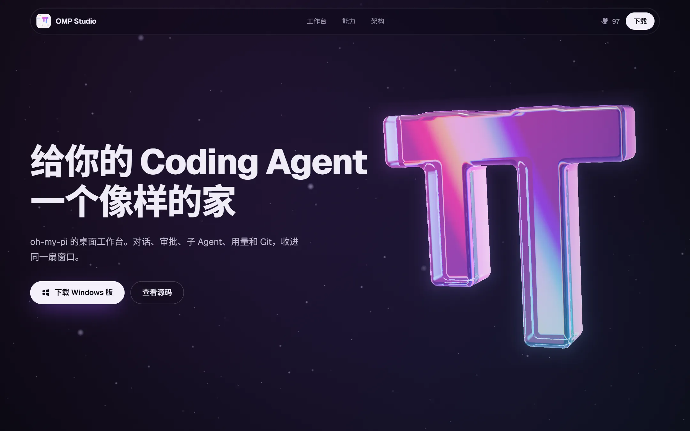
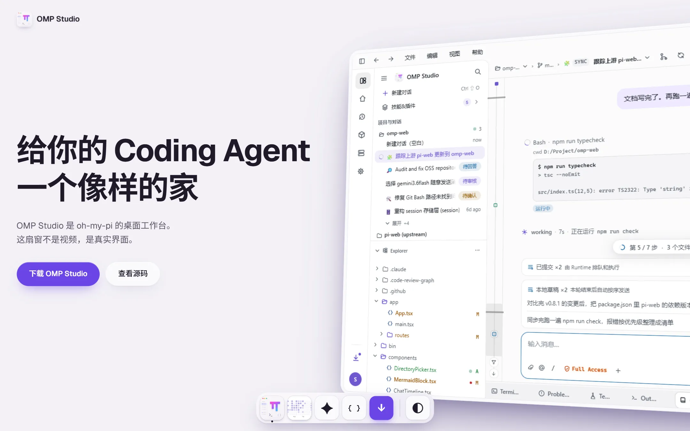
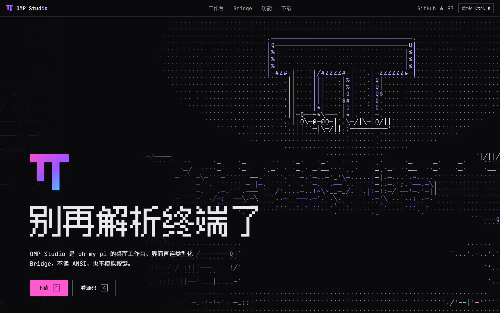

穿越暗色，电影感，滚动即镜头
实时光线步进的玻璃 π，镜头从拱门穿过，飞过散落的窗口，落进一段随滚动播放的真实对话。
打开方案 A
活窗亮色，石膏质感，真机可玩
首屏就是真实的 Studio 渲染层。可以点、可以拖大小，导览会替你操作它。
打开方案 B
解析字符网格，键盘优先
把 TUI 与 GUI 的差别做成着色器：界面从字符解析成画面。Ctrl K 可以操作整个站点。
打开方案 C
实时光线步进的玻璃 π，镜头从拱门穿过，飞过散落的窗口，落进一段随滚动播放的真实对话。
打开方案 A
首屏就是真实的 Studio 渲染层。可以点、可以拖大小，导览会替你操作它。
打开方案 B
把 TUI 与 GUI 的差别做成着色器：界面从字符解析成画面。Ctrl K 可以操作整个站点。
打开方案 C